Crna tamjanika
Suho crno · autohtona sorta
Duboka rubin boja, crna ribizla i suvi list, zbijeni tanini.
Naša vina
Sedam sorti sa pet plantaža, sve iz jednog podruma u Rečki.
Suho crno · autohtona sorta
Duboka rubin boja, crna ribizla i suvi list, zbijeni tanini.

Suho crno · barrique
Suve šljive i duvan, pun i uglačan, srednje duga završnica.

Suho crno · selekcija
Zagasito rubin, slojevit i voćan, mekanih tanina.

Suho crno
Svetlija rubin, višnja i suvo cveće, živa kiselina.

Suho belo
Zlatno žuta, kruška i ananas, cvetno-voćna završnica.

Suho belo
Tropsko voće i zova, hrskave kiseline, lagano telo.

Suho belo
Zova, bagrem i liči; punog tela, blage kiseline.

Suho rosé
Malina i jagoda, voćno, umereno pun i gladak.
Srebrna medalja · AWC Vienna 2013
Zagasito rubin, slojevit i snažan; mekanih tanina i prijatnih kiselina.
Sva devet se degustiraju
na jednom mestu.
O nama
Vinarija Mikić je porodični podrum u Rečki kod Negotina. Vino pravimo od 1997, na pet plantaža u dva vinogorja Negotinske Krajine.
Prva loza posađena je 1997. na parceli iznad Rečke. Dvadeset devet berbi kasnije radimo šest hektara pod lozom, sedam sorti grožđa i devet vina — sve iz jednog podruma.
Ništa se ne kupuje sa strane. Grožđe je naše, berba je ručna, a vino ostaje u podrumu dok ne bude spremno.
Manje intervencija, više vremena. Fermentacija na kontrolisanoj temperaturi, odležavanje u hrastu za crna vina, hladan kamen pivnice za sve ostalo.
Kapacitet je namerno mali — koliko dve ruke mogu da isprate od loze do flaše.
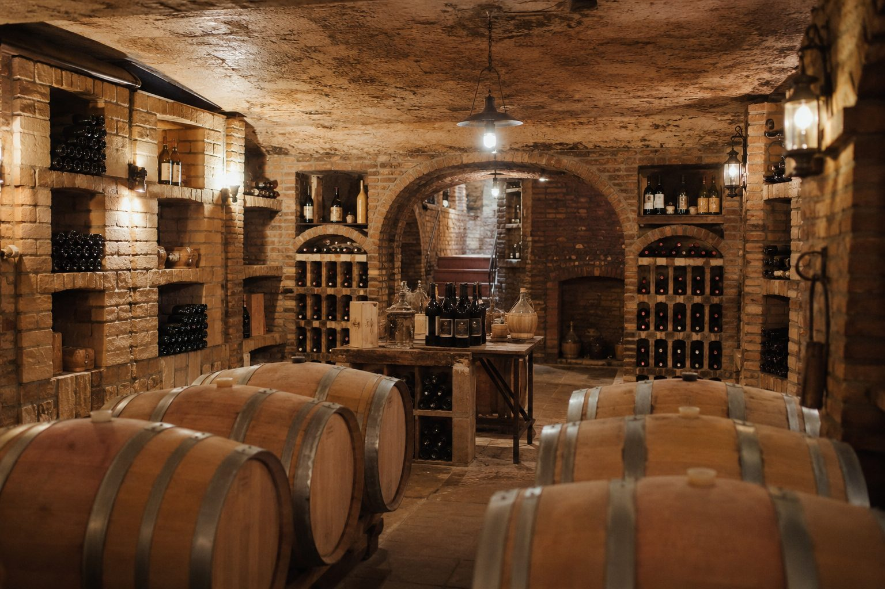
Podrum
Naš podrum je jedna od pivnica rajačko-rogljevačkog vinogorja — zidan u 19. veku, ukopan u padinu, sa temperaturom koja se preko godine ne menja.
Poseti vinarijuVino se ne pravi u podrumu.
Podrum ga samo sačuva.

{{ detailLine }}
{{ detailIntro }}
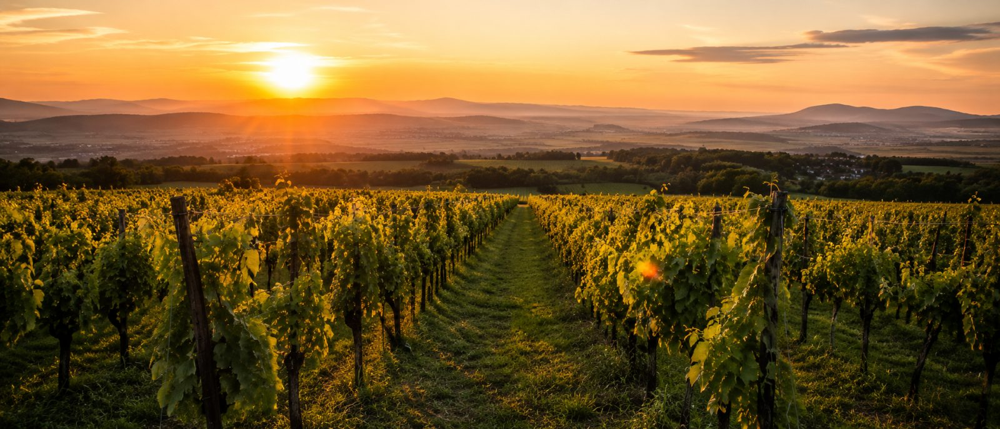
Est. 1997 · Negotinska Krajina
Vinarija Mikić — dvadeset devet godina, pet plantaža i podrum ukopan u padinu Rajca.
Zakaži degustaciju →Priča
Vino je među napitcima najkorisnije, među lekovima najukusnije, a među jelima najprijatnije.
Negotinska Krajina pravi vino duže nego što pamti. Peskovito-glinovita zemlja, dunavski vetar i strme padine Rajca i Rogljeva daju grožđe koje ne traži pomoć u podrumu.
Porodica Mikić radi ovde od 1997. Devet vina, sedam sorti, jedan pristup: manje intervencije, više vremena.
Naša vina
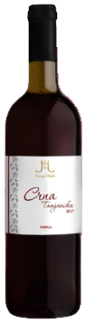
Suho crno · barrique
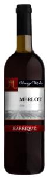
Suho crno · barrique
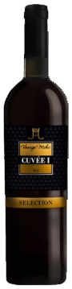
Suho crno · autohtona sorta
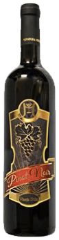
Suho crno · mlado
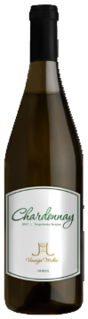
Suho belo
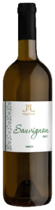
Suho belo
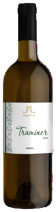
Suho belo
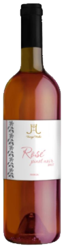
Suho rosé
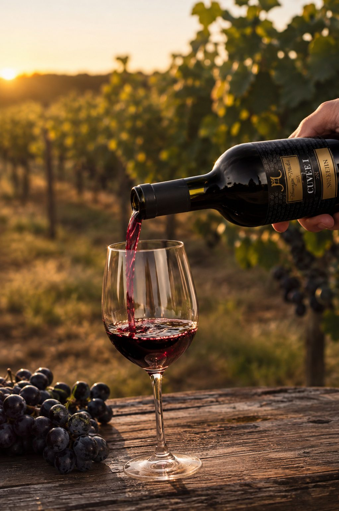
Srebrna medalja · AWC Vienna 2013
Nagrade
Cuvée I je nagrađen na najvećem svetskom ocenjivanju vina u Beču. Jedna medalja, jedno vino, bez daljeg komentara.
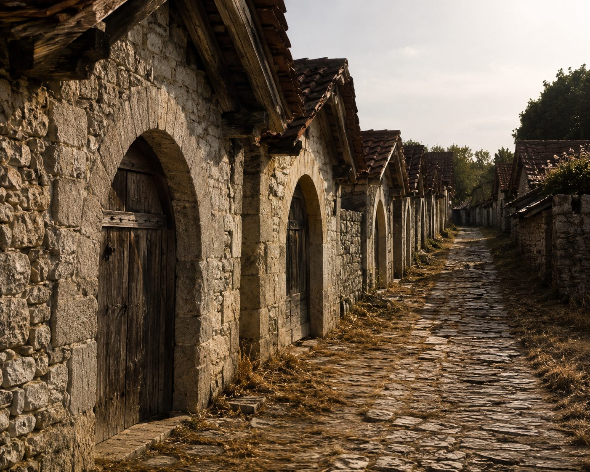
Pivnice
Rajac i Rogljevo su naselja u kojima nikad nije spavao čovek — samo vino. Kamene pivnice zidane su u 18. i 19. veku, ukopane u padinu, sa temperaturom koja se ne menja preko cele godine.
Naš podrum je jedna od njih.
Plantaže i vinogorja
Peskovito-glinovita zemlja, ravnija ekspozicija, veći dozrevanje šećera.
Strme padine i kamen, niži prinos, koncentrisanije grožđe.
Ukupna površina
pod lozom
Rajac, kamena pivnica
Otkrijte Negotinsku
Krajinu kroz vino
Poseta vinariji
Obilazak plantaža i degustacija u kamenoj pivnici. Grupe do dvanaest ljudi, uz najavu.
Zakaži degustaciju